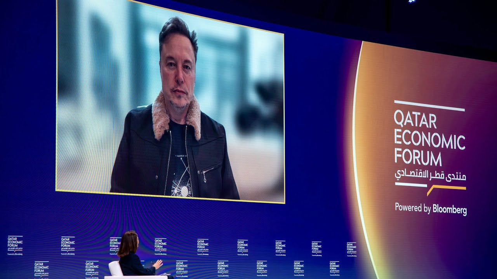

Elon Musk on money & power
Said · May 2025
“In terms of political spending, I’m going to do a lot less in the future. I think I’ve done enough.”
Qatar Economic Forum · Bloomberg interview

Then · October 2026
New filings show he gave $158 million in September to a Senate Republican super PAC. He has spent roughly $366 million this midterm cycle.
We all think he’s done quite enough — but apparently Musk just couldn’t help himself.
And why would he keep his word? Since his last round of funding his president, he became the world’s first trillionaire. The money is inconsequential; the power is addictive.
Watch · CNN clip
Sources (7)
- May 2025Bloomberg — Qatar Economic Forum interview (video)
- May 20, 2025Reuters — the original quote
- May 20, 2025CBS News — Musk says he’ll scale back political spending
- May 20, 2025NPR — Musk to slow down political spending
- Jun 11, 2026Reuters — SpaceX IPO makes Musk the first trillionaire
- Oct 12, 2026Reuters — $366 million this cycle
- Oct 16, 2026CBS News — $150M+ to Senate GOP group